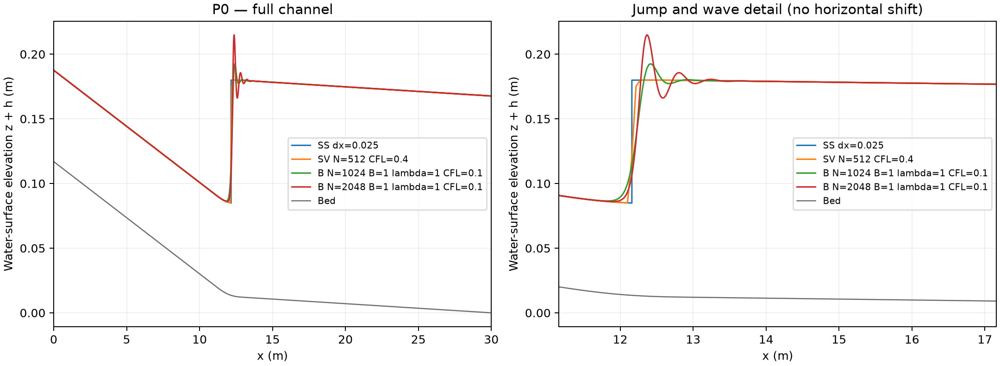

第四章 如何判讀水面與收斂趨勢
計算完成後，先確認算的是同一個問題，再判斷曲線與指標。不要只挑最平滑或最接近某條參考線的結果。
本頁適用標準步法（SS）、聖維南淺水方程（SV）、定常壓力近似 Boussinesq 模型（B）與 HEC-RAS。每張圖至少標示案例、方法、網格或斷面間距，以及 SI 單位。
1. 每次執行會留下什麼？
| 檔案 | 內容 | 學生要讀什麼 |
|---|---|---|
| case.json | 本次真正使用的物理條件 | 查幾何、流量、粗糙度與邊界 |
| metadata.json | 數值設定、程式識別與執行狀態 | 先看成功／失敗，再看定常篩檢 |
| profile.csv | 統一欄位的水面表 | 繪完整與局部水面 |
| summary.json | 位置、水深及波動指標 | 保留定義與N/A原因 |
| native/ | 原程式的輸入、日誌與收支 | 檢查負水深、流量收支及時間變化；SS無此資料夾 |
| newton.json（B） | 逐級固定點搜尋記錄 | 確認殘差與每一級是否通過 |
| solution.json（SS） | 標準步法分支與跳接 | 追溯有效分支與能量殘差 |
CSV 是逗號分隔的表格文字，可用試算表或 Python 讀取；JSON 是參數與摘要的結構化文字；DAT 是原程式輸出的數值表。passed_integrity 表示檔案、正水深與指定收支檢查通過；steady_screen 是另外的定常篩檢。這兩種「通過」都不等於物理模型已經驗證。
2. 先畫完整水面，再看局部
完整圖畫 的 ，附上床面；局部圖放大水躍與波尾。所有方法保留真實座標，先不把曲線水平平移來對齊，也不先平滑波動。這樣才看得出位置與波形的差異。

圖中的 B 波峰隨網格改變，是學生要研究的現象。標準步法的垂直跳接、SV 的跨格上升及 B 的波列來自不同的模型與離散方式，不能只用「哪條比較漂亮」選答案。
3. 水躍位置怎麼定義？先說清楚才比較
- 標準步法： 是兩條有效分支比力相等的位置。
- HEC-RAS：報告相鄰超臨界與次臨界斷面形成的區間，不憑連線圖虛構一個更精細的精確位置。
- SV／B：本套件用水深越過共同參考高度的位置，作為數值比較指標。
先取該案例標準步法的躍前、躍後水深 ，定義：
是水深由低向高穿越 的位置。若有且只有一個交越，摘要欄位 x50_unique_m 才有數值。若水面波動使它上穿多次，所有交點保留，而唯一位置記為 null，表示未定義。N/A（not applicable／not available）在這裡表示該指標不適用或證據不足，不是零。
只有10%與90%上穿點都唯一時，才報：
這是數值水面上升段寬度，不直接等於真實水躍或翻滾區長度。程式另保留「第一個交越」供補充描述，但不能拿它冒充原本要求的唯一交越。
4. 水深、波峰、峰距與波尾
外側平均水深固定在相對於標準步法位置的兩個空間窗取樣，以減少直接比較波峰造成的混淆：
這是共同取樣規則，不保證下游窗已完全沒有波。B 波動分析窗為：
本套件報的是水深 的峰，不是水面高程 的峰。令第 個水深峰及其後的谷值為 ，可定義：
為峰谷差， 為相鄰峰距；大寫 與數值耗散倍率小寫 不同。衰減尺度 只有在振幅往下游減少時才有意義。
程式用局部三點拋物線估計峰位與峰高，辨認峰谷差至少 的波；排除第一峰後計算後續峰距的中位數。至少辨認四組峰谷、且第二組之後的振幅單調下降，才報衰減尺度的中位數。條件不足就報 N/A，仍可繳交峰谷序列與原因。
5. 「穩定」有三種不同意思
- 重現性：同樣程式、同樣輸入能否重現既有數值結果？
- 時間穩定性：晚一點取樣，平均水面是否仍在移動或波動？
- 解析度穩定性：減小網格或時間步，位置、水深與波形是否變化減少？
SV 可以比較200–250與250–300秒的平均，並查看時間標準差。P0 的 SV512 已重現既有結果，但局部仍有時間波動；不要把平均水面寫成每一瞬間完全不變的水面。B 的小殘差與短續算只檢查固定點維持性，不能替代網格比較。
可先用下面兩個量整理粗、細網格差異：
如果唯一 不存在， 也不能照算。位置 、外側平均水深 是本專題的工程討論尺度，不是對所有波峰的硬性及格線，也不是實驗驗證門檻。兩層網格差小只能支持趨勢較穩定，不能證明完全收斂。
6. 報告要怎麼下結論？
可以寫：「尾水增加時，兩種方法都預測水躍向上游移；加密後位置差縮小，但 B 第一峰仍增加，因此位置趨勢比局部波峰更穩定。」不要只寫「誤差很大」；先說差的是位置、水深、峰高或相位，分母與取樣區間是什麼。
本案沒有實驗真值，所以方法之間的差叫模型差異。工程水頭 可供比較，但不是完整 B 模型的守恆能量。SV 表格中的 是平均水深乘平均速度，水量守恆要另外看原程式的通量收支。